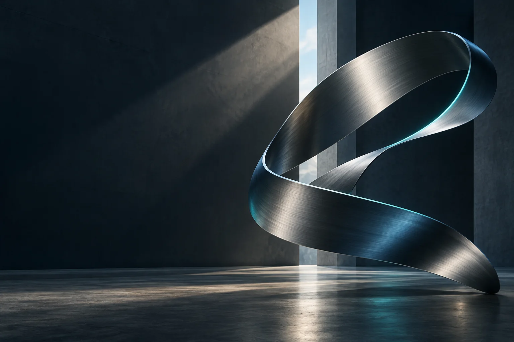

02 / ABOUT SHINOX
讓設備、場地與營運，
在同一個方向前進。
ShinoX 洗諾克斯專注洗車設備與系統整合，從自助洗車、洗車設備到場域規劃，讓每個建場決定都有清楚的討論起點。
以場地條件與實際需求出發，串接設備選型、配置與建置討論。台灣與海外設備需求，皆可由專人協助確認。
了解事業方案 ↗01 / EQUIPMENT
從設備出發
釐清清潔流程、操作及支付需求。
02 / INTEGRATION
以整合思考
一起討論設備配置與場地動線。
03 / CONVERSATION
讓需求先被理解
台灣建場與海外詢價，從專業對話開始。
LET’S BUILD WHAT’S NEXT